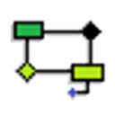
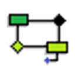

Lista de Sites ou Softwares que Fazem Criação UML
Será listado variás ferramentas que auxiliam o desenvolvedor na hora da criação UML, sejam elas sites com recursos gratuitos ou softwares.
O Visual Paradigm é um site que disponibiliza varias ferramentas, sejam para ciração UML, ou para outras criações. Com uma gama grande de locais para salvar, seja em seu computador, ou na própria plataforma, é uma solução muito viável para diversas pessoa.
Com semelhança ao Visual Paradigm, o Lucidchart é um site com disponivilidade de ferramentas UML grattuitas, disponibilizando também várias formas de salvar seu trabalho.
 O StarUML é um software com características bem amplas para desenvolvimento UML, tendo várias opções de plug-ins para auxiliar ainda mais no seu desenvovimento.

O Br Modelo é um software para desenvolvimento UML, mais focado em criação de modelagem de dados, é totalmente gratuito e com uma interface agradável.
O StarUML é um software com características bem amplas para desenvolvimento UML, tendo várias opções de plug-ins para auxiliar ainda mais no seu desenvovimento.

O Br Modelo é um software para desenvolvimento UML, mais focado em criação de modelagem de dados, é totalmente gratuito e com uma interface agradável.